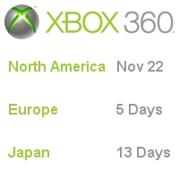

CESPage.com Xbox Weekly Update Fourteen
Xbox 360 Launch, Xbox 360 Support and CESPage.com Xbox
By CESPage.com Xbox, Published 27th November 2005
Xbox 360 Launch
22nd of November 2005 saw the launch of the Xbox 360 for North America at midnight, with the main launch event being the Zero Hour event held in the Mohave Desert,
California. With just five days to go before the release of the Xbox 360 in Europe on the 2nd of December and followed by the Japanese release on December 10th there
are those still waiting to get their hands on the successful console that sole out on the first day of sale in North America, which will probably be repeated in all
territories where the Xbox 360 is to be launched. Those living in the Australia region will unfortunately have to wait a bit longer for their consoles, hopeful filled
by chances to play on the Kiosks in-store as the date for release there is March 2006.
To celebrate the launch of the Xbox 360, CESPage.com Xbox has adopted an Xbox 360 theme for the duration of the launches from November 22nd to December 10th the
Xbox 360 colour scheme will appear on the website.
Accessory in Focus
This week's accessory in focus is the Xbox 360 Wireless Network Adapter which allows the of transfer videos and music to the Xbox 360 system from a Media Center PC,
chat with friends, play games via Xbox Live, and more, without the clutter of wires.
The Xbox 360 Wireless Network Adapter supports 802.11b, 802.11g, and 802.11a wireless standards with the latter supporting High Definition streaming content.
It is powered seamlessly by your Xbox 360 gaming console, so there's no external power adapter to plug in.

Xbox 360 Support
With the launch of the Xbox 360 in North America, there is a variety of Xbox 360 support articles available, so if you do have any problems with the console you will be able to get the information you need. If for some reason the Xbox 360 does not turn on and it is plugged in and switched on at the mains then check for flashing red lights on the Ring of Light on the console. Then check the Knowledge Base article Xbox 360: The console does not turn on from Microsoft which explains the various messages and Ring of Light indications that may be displayed. Remember to read the instructions carefully for the console and allow space for ventilation as the console is very powerful and requires good airflow for cooling this includes the now external power supply unit which also requires ventilation, this should allow for a problem free gaming experience, in the unlikely event of any problems then check out the Support Articles from Microsoft of contact Microsoft Support.
CESPage.com Xbox
Last week saw the launch of the Xbox 360 in North America and this week sees the launch of the console in Europe, CESPage.com Xbox should be receiving an Xbox 360 console around this time. Look out for a review of the console including Dashboard features and game review of Project Gotham Racing 3 and Perfect Dark Zero and also the hardware itself including comparison with the original Xbox games and hardware.